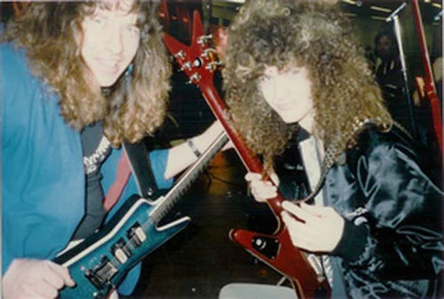
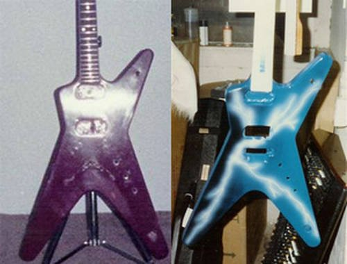

Darrell "Dimebag" Abbott nascido em 20 de agosto de 1966, faleceu em 8 de dezembro de 2004, também chamado de Diamond Darrell, foi guitarrista das bandas de heavy metal Pantera,Damageplan Rebel Meets Rebel.
Darrell Lance Abbott nasceu em Dallas, no Estado norte-americano do Texas, filho de Jerry Abbott, compositor de música country. Seu pai era dono de um estúdio de gravação na cidade de Pantego, Texas, onde Darrell viu a performance de muitos guitarristas de blues, inspirando-o a aprender a tocar o instrumento. Logo, Dime começou a participar de competições estaduais de guitarra e com 16 anos foi proibido de participar porque ganhava muitas vezes!
Entre as principais influências musicais de Dimebag estavam Judas Priest, e os guitarristas Randy Rhoads, Eddie Van Halen e Ace Frehley
Em memória a Dimebag várias bandas, revistas, jornais, programas de TV e algumas celebridades, todas internacionais, se pronunciaram ou fizeram projetos em memória deste guitarrista. Dentre estas homenagens uma das mais respeitadas é a da banda do guitarrista, tecladista, cantor e compositor, Zakk Wylde, Black Label Society, em seu clip In this river.
Dimebag foi assassinado durante um show no dia 8 de dezembro de 2004, na cidade de Columbus, Ohio. Seu assassino, Nathan Gale, 25, entrou no recinto onde estava sendo realizado o show (Alrosa Villa), logo após o início da performance, após escalar uma grade de 2,43 metros e ser caçado no prédio pelos seguranças do local. Ele entrou no lado esquerdo do palco e procedeu para a direita onde estava Dimebag. Gale então agarrou Dimebag e atirou duas vezes na cabeça dele com uma pistola Beretta. Dimebag recebeu um total de cinco a oito ferimentos das balas.
Naquela tarde tudo parecia normal, até que após a passagem de som, Jeff "Mayhem" Thompson (segurança do Pantera que acabou sendo morto no tiroteio), foi obrigado a expulsar do local um indivíduo que ali estava incomodando; entretanto no meio da música isso é praxe, e ninguém suspeitava que se tratava de alguém realmente perigoso. Logo após, um novo incidente, a caminhonete de Nathan Gale (o assassino) estava estacionada atrás do ônibus da banda e o proprietário foi advertido várias vezes pelo sistema de som da casa para que a tirasse de lá, sob pena de ser guinchada.
O show estava para começar, um dos roadies foi em direção ao bar, quando de repente ouviram-se os primeiros tiros. Dimebag estava caído no chão e no palco notava-se um enorme tumulto. Ouvia-se o “feedback” da guitarra que havia caído junto com ele. Imediatamente ele se moveu para o palco, agarrou Vinnie Paul (baterista do PANTERA e irmão de Dimebag) e o levou para um local seguro.
O outro roadie foi a última pessoa que conversou com Dimebag, e no momento dos tiros estava a poucos metros de distância. Gale entrou no palco pela direita e moveu-se em direção de Darrell. Ninguém da segurança conseguiu alcançá-lo, Gale desferiu pelo menos cinco tiros à queima-roupa no corpo do guitarrista, e um tiro final que atingiu a cabeça de Dimebag levando-o ao chão. Segundo o roadie, Darrell morreu antes de cair ao chão, e nada e ninguém poderia salvá-lo naquele momento. Um ruído produzido pela guitarra ecoava pelo ambiente.
Após esse momento, o atirador ergueu a arma e apontou para um dos roadies, porém ele foi interceptado por "Mayhem" e Erin "Stoney" Halk, que estavam desarmados e arriscaram suas vidas na tentativa de impedir que aquela barbárie continuasse. Gale, que era ex-fuzileiro naval, trocou o pente de sua 9mm semi-automática e num piscar de olhos matou Mayhem e Erin Halk. Gale tinha cerca de cinco pentes de munições em seus bolsos. Com os seguranças mortos, o atirador recarregou a arma e continuou ferindo pessoas que ali estavam.
A tumba de DimebagNathan Bray, um fã da banda, subiu no palco e num ato heróico tentou reanimar Dimebag com massagens cardio-pulmonares. Acabou sendo atingido também pelo atirador e morreu heroicamente ao lado de seu ídolo.
Nesse momento foram vistos alguns policiais em posições defensivas dentro do clube, Gale pegou um refém na tentativa de escapar do local. Foi quando o policial James Niggemeyer que adentrou o clube pelos fundos, acertou Gale com um tiro fatal, sem ferir o refém. E assim a carnificina que durou poucos minutos chegou ao final, num dos dias mais tristes de toda a história do Heavy Metal.
Os roadies Jon e Tubbs que presenciaram essas cenas disseram que precisaram de um bom tempo para se recuperar de tal choque, porém não desistiram de suas profissões.
O enterro de Dimebag foi realizado numa cerimônia fechada à imprensa. Somente a família e amigos puderam entrar. No entanto, fãs do mundo inteiro fizeram vigília na sua casa no Texas onde passou sua infância, em um singelo ato de respeito ao grande guitarrista e pessoa que foi Dimebag Darrell.
Viva Diamond Darrel, um Deus da guitarra, um ídolo, um herói, uma inspiração.Darrell "Dimebag" Abbott nascido em 20 de agosto de 1966, faleceu em 8 de dezembro de 2004, também chamado de Diamond Darrell, foi guitarrista das bandas de heavy metal Pantera,Damageplan Rebel Meets Rebel.
Darrell Lance Abbott nasceu em Dallas, no Estado norte-americano do Texas, filho de Jerry Abbott, compositor de música country. Seu pai era dono de um estúdio de gravação na cidade de Pantego, Texas, onde Darrell viu a performance de muitos guitarristas de blues, inspirando-o a aprender a tocar o instrumento. Logo, Dime começou a participar de competições estaduais de guitarra e com 16 anos foi proibido de participar porque ganhava muitas vezes!
Entre as principais influências musicais de Dimebag estavam Judas Priest, e os guitarristas Randy Rhoads, Eddie Van Halen e Ace Frehley.
Em memória a Dimebag várias bandas, revistas, jornais, programas de TV e algumas celebridades, todas internacionais, se pronunciaram ou fizeram projetos em memória deste guitarrista. Dentre estas homenagens uma das mais respeitadas é a da banda do guitarrista, tecladista, cantor e compositor, Zakk Wylde, Black Label Society, em seu clip In this river.
Dimebag foi assassinado durante um show no dia 8 de dezembro de 2004, na cidade de Columbus, Ohio. Seu assassino, Nathan Gale, 25, entrou no recinto onde estava sendo realizado o show (Alrosa Villa), logo após o início da performance, após escalar uma grade de 2,43 metros e ser caçado no prédio pelos seguranças do local. Ele entrou no lado esquerdo do palco e procedeu para a direita onde estava Dimebag. Gale então agarrou Dimebag e atirou duas vezes na cabeça dele com uma pistola Beretta. Dimebag recebeu um total de cinco a oito ferimentos das balas.
Naquela tarde tudo parecia normal, até que após a passagem de som, Jeff "Mayhem" Thompson (segurança do Pantera que acabou sendo morto no tiroteio), foi obrigado a expulsar do local um indivíduo que ali estava incomodando; entretanto no meio da música isso é praxe, e ninguém suspeitava que se tratava de alguém realmente perigoso. Logo após, um novo incidente, a caminhonete de Nathan Gale (o assassino) estava estacionada atrás do ônibus da banda e o proprietário foi advertido várias vezes pelo sistema de som da casa para que a tirasse de lá, sob pena de ser guinchada.
O show estava para começar, um dos roadies foi em direção ao bar, quando de repente ouviram-se os primeiros tiros. Dimebag estava caído no chão e no palco notava-se um enorme tumulto. Ouvia-se o “feedback” da guitarra que havia caído junto com ele. Imediatamente ele se moveu para o palco, agarrou Vinnie Paul (baterista do PANTERA e irmão de Dimebag) e o levou para um local seguro.
O outro roadie foi a última pessoa que conversou com Dimebag, e no momento dos tiros estava a poucos metros de distância. Gale entrou no palco pela direita e moveu-se em direção de Darrell. Ninguém da segurança conseguiu alcançá-lo, Gale desferiu pelo menos cinco tiros à queima-roupa no corpo do guitarrista, e um tiro final que atingiu a cabeça de Dimebag levando-o ao chão. Segundo o roadie, Darrell morreu antes de cair ao chão, e nada e ninguém poderia salvá-lo naquele momento. Um ruído produzido pela guitarra ecoava pelo ambiente.
Após esse momento, o atirador ergueu a arma e apontou para um dos roadies, porém ele foi interceptado por "Mayhem" e Erin "Stoney" Halk, que estavam desarmados e arriscaram suas vidas na tentativa de impedir que aquela barbárie continuasse. Gale, que era ex-fuzileiro naval, trocou o pente de sua 9mm semi-automática e num piscar de olhos matou Mayhem e Erin Halk. Gale tinha cerca de cinco pentes de munições em seus bolsos. Com os seguranças mortos, o atirador recarregou a arma e continuou ferindo pessoas que ali estavam.
A tumba de DimebagNathan Bray, um fã da banda, subiu no palco e num ato heróico tentou reanimar Dimebag com massagens cardio-pulmonares. Acabou sendo atingido também pelo atirador e morreu heroicamente ao lado de seu ídolo.
Nesse momento foram vistos alguns policiais em posições defensivas dentro do clube, Gale pegou um refém na tentativa de escapar do local. Foi quando o policial James Niggemeyer que adentrou o clube pelos fundos, acertou Gale com um tiro fatal, sem ferir o refém. E assim a carnificina que durou poucos minutos chegou ao final, num dos dias mais tristes de toda a história do Heavy Metal.
Os roadies Jon e Tubbs que presenciaram essas cenas disseram que precisaram de um bom tempo para se recuperar de tal choque, porém não desistiram de suas profissões.
O enterro de Dimebag foi realizado numa cerimônia fechada à imprensa. Somente a família e amigos puderam entrar. No entanto, fãs do mundo inteiro fizeram vigília na sua casa no Texas onde passou sua infância, em um singelo ato de respeito ao grande guitarrista e pessoa que foi Dimebag Darrell.
Viva Diamond Darrel, um Deus da guitarra, um ídolo, um herói, uma inspiração.
Nome completo Darrell Lance Abbott Também conhecido(a) como Dimebag Darrell
Nascimento 20 de agosto de 1966
Origem Dallas, Texas País Estados Unidos
Morte 8 de dezembro de 2004 (38 anos)
Gênero(s) Heavy metal, thrash metal, glam metal, groove metal Instrumento(s) Guitarra
Modelos de instrumentos Dean/Washburn Dime
Período em atividade 1981–2004
Afiliação(ões) Pantera Damageplan
DIMEBAG DARRELL (1966 - 2004) ex DAMAGEPLAN, PANTERA, REBEL MEETS REBEL, ganhou uma guitarra Dean ML quando adolescente, em um concurso no Ritz, em Dallas. No início, Dime não soltava a sua guitarra, eram inseparáveis. Quando Darrell já estava no Pantera nas suas primeiras jornadas em uma banda popular ainda na fase inicial, conheceu Blaze, um cara totalmente fã de guitarras Dean, o que levou os dois a serem grandes amigos.
Com o passar do tempo, Dime percebeu que havia outro jeito para se divertir. Começou a se interessar por coisas que a sua guitarra não podia lhe proporcionar: Mulheres e Firebirds! Colocou definitivamente em sua cabeça, que precisava de um Firebird, a qualquer custo. Com isso, perguntou para seu amigo Blaze, se ele não estava afim de comprar sua Dean ML, pois queria muito o veículo. Blaze falou que Dime não podia fazer isso, estaria vendendo um troféu, um troféu que ganhou anos atrás em um concurso, e que quando passasse 50 anos, poderia mostrá-la a seus netos e dizer que a ganhou muito tempo atrás em um festival.
Mas, a inexperiência de Darrell fez com que ignorasse o conselho de Blaze, indo atrás de outro comprador. Estava disposto a vender sua Dean para poder comprar um Firebird amarelo e por suas mãos ao volante.
E vendeu!
Dime acabou vendendo sua guitarra troféu para o colega de banda de Blaze, seu amigo. Quando Blaze foi para o ensaio, viu seu colega com aquela Dean ML, e ele percebeu de longe que esta era de Dime. O que ele fez? Acabou negociando com o colega de banda, trocando a sua recente Kramer Pacer, por sinal, a melhor guitarra que ele já havia posto as mãos, pela Dean ML. (que cara foda!).
Enquanto isso, Dime havia conquistado seu Firebird, e lá estava ele, com aquele cabelo grande e encaracolado, fazendo loucuras com o carro, sendo conhecido pela região toda por suas conduções tolas e imaturas.
Blaze agora com a ML, percebeu que havia algo fora do lugar: Todas as suas guitarras eram azuis, e a ML, ex guitarra do Dime, era marrom. Então resolveu dar uma reformada nela, pintando-a de azul, e não só isso, fazendo um desenho de uma tempestade com trovões, após várias pesquisas em revistas National Geographic para ter essa referência.
Conforme o tempo passava, Blaze continuou a ajustar e modificar a guitarra. Ele reformulou o pescoço para fazer o V mais acentuado, acrescentou uma ponte Floyd Rose e substituiu os captadores padrão, entre outras adições (parafusos pretos, etc).
o tempo passava, Blaze continuou a ajustar e modificar a guitarra. Ele reformulou o pescoço para fazer o V mais acentuado, acrescentou uma ponte Floyd Rose e substituiu os captadores padrão, entre outras adições (parafusos pretos, etc).
A guitarra ficou do jeito em que Blaze desejou, MAS, ele continuou achando que algo estava fora do lugar. Percebeu que esta guitarra, apesar de estar perfeita, não era dele, este era o troféu de Dime, o que não fazia ele se sentir bem (apesar de considerar até hoje, "sua" guitarra preferida).
Após meses, Blaze e Pantera voltaram a se encontrar. Nessa mesma época, Pantera havia contratado um tal de Phil Anselmo para a banda , e estavam indo para o estúdio gravar o Power Metal, enquanto Blaze havia acabado de conseguir um trampo lucrativo em New Jersey, produzindo guitarras personalizadas. Então Blaze emprestou sua guitarra à Dime, até a hora de ele poder fazer uma cópia para ele.
Depois de semanas longe de sua guitarra Dean, Blaze recebeu um telefonema de Darrell: "Cara eu realmente amo esta guitarra, mas eu não quero arranhá-la. Esta não é igual a minha guitarra!". Blaze respondeu rapidamente: "Não se preocupe com isso Darrell, algum dia quando você for um astro, farei questão de falar para todo mundo que você já riscou minha guitarra".
Apenas algumas semanas se passaram, e Dime ligou de novo para Blaze, insistindo para ele vender sua Dean, agora azul, personalizada, pois acabou se apaixonando por ela. Blaze então respondeu: "Darrell, lembra quando você tentou me vender a sua Dean ML marrom/vermelha, e eu não quis comprá-la? Você se lembra quando disse que você não poderia vender seus troféus? Você teve sorte desta vez, porque essa é a sua guitarra ML, sua guitarra troféu. Ela sempre foi sua, e agora é sua de novo".
Blaze lembra da reação até hoje, Dime gritando de felicidade, alegre como nunca. Com isso, Blaze sabia que a guitarra estava de volta para casa.